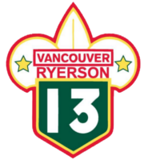
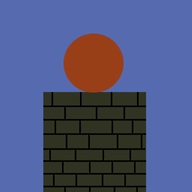

Hi. My name is Matthew.
I'm originally from the city of Vancouver, British Columbia, but I'm currently studying at the University of Waterloo in Ontario. My areas of focus are Mathematical Physics and Computer Science. My goal in life is to build cool things, and to help pave the way for other people to build even cooler things.
Right now, I'm looking for work for summer 2016, so if you think I might be good at working on your cool things, click on the Contact tab and let me know.
I have a lot of interests past just what I study at school. While I can't always devote as much time to them as I want, they often have (what I think of as) some pretty cool outcomes:
Waterloo Baja TeamI am an active member of the University of Waterloo's Baja SAE team. Our team builds and races a car every year, competing against other universities from Canada and the United States. For more information about Baja racing, you can check out our team, or visit the Baja SAE site. |
|
Aerospace EngineeringAlthough I can't truthfully refer to myself as an engineer, aerospace engineering is one of my greatest interests. I hope that, at some point, I'll be able to make a formal contribution to the field, but for now, I spend a lot of my time researching and learning about exciting new aerospace technologies. In October of 2015, I had the chance to participate in the Waterloo Rocketry Team's annual Rocket Drag Race. Myself and my team spent a weekend designing, building, and racing an A-class model rocket. It was an extremely successful event, and I had a great time learning the theoretical and practical fundamentals of rocketry. |
|
CampingLikely my favourite non-academic pastime is going hiking and camping, be it just for an afternoon, a weekend event, or a full week-long trip. Being from BC, I've had the chance to visit and explore a lot of awe-inspiring terrain, from the canoeing and portaging on the Brewster Lake chain, to climbing mountains in Manning Park. I'm also part of the UW Parks Canada Club: part of an initiative by Parks Canada to promote interest in Canadian parks and historical sites on university campuses. |
|
ScoutingFor almost all of my life, I have been involved in at least some capacity with Scouts Canada. Most recently, I was a Scout leader with the 13th Ryerson group based in Vancouver, BC. Last summer, I attended PJ 2015 with the group. |
 |
Every so often, I come up with an idea for something that I want, that doesn't already exist, that I could make. Not every idea is good, but each provides at least a chance to explore a new topic in a unique way. These are some of the success stories:
Tower BallA lone ball stands against the will of nature, as it fights for its gravitational potential atop a cold, stony monolith. Tower Ball is an arcade-style game that I helped to create and write. Personally, I was responsible for handling the in-game physics, as well as designing some of the UI. It's currently available for both Android and iOS. |
 |
This WebsiteThe one you're looking at. Right now. This website is a constant battle between myself and my computer. Think it looks good? Great. Not working? As long as you're reading this, I disagree. Images gone and text upside down? Sounds like a hardware issue. It write all of the code myself (no matter how much I dislike Javascript), and it's hosted with the University of Waterloo Computer Science Club. |
|
Want to contact me? Here's how:
| Email: | matthew.palmer@uwaterloo.ca |
| Github: | unendingspace |
| Phone: | 778-990-9208 |